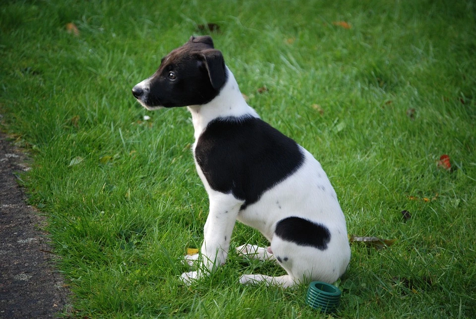

Hund
Der Haushund (Canis lupus familiaris) ist ein Haustier und wird als Heim- und Nutztier gehalten. Seine wilde Stammform ist der Wolf, dem er als Unterart zugeordnet wird. Wann die Domestizierung stattfand, ist umstritten; wissenschaftliche Schätzungen variieren zwischen etwa 15.000 v. Chr. und 100.000 Jahren.
engeren Sinn bezeichnet man als Haushund die Hunde, die überwiegend im Haus gehalten werden, und kennzeichnet damit also eine Haltungsform. Historisch wurde ein Hund, der zur Bewachung des Hauses gehalten wird, als Haushund bezeichnet. Eine weitere Verwendung des Begriffs ist die Einschränkung auf sozialisierte (Haus-)Hunde, also Hunde, die an das Zusammenleben mit Menschen in der menschlichen Gesellschaft gewöhnt und an dieses angepasst sind. Damit wird der Haushund abgegrenzt gegen wild lebende, verwilderte oder streunende Hunde, die zwar auch domestiziert, aber nicht sozialisiert sind.
Dingo ist ebenfalls ein Haushund, wird jedoch provisorisch als eigenständige Unterart des Wolfes geführt.
Bild herunterladen